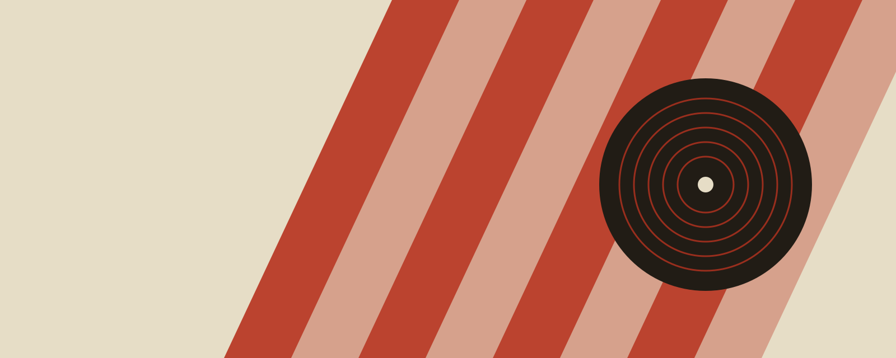

Sponsored
Deep Groove Recordscraigcsb.github.io › rock-week
Rock Week at Deep Groove — Turn It Up to the Run-Out Groove
Loud records, heavy vinyl. The rock pressings are back in the crates for one week only. Shop the rock crate.
